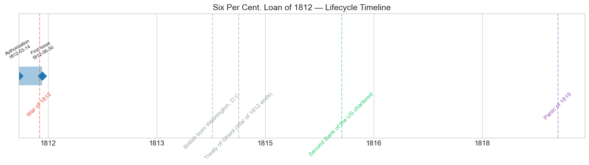
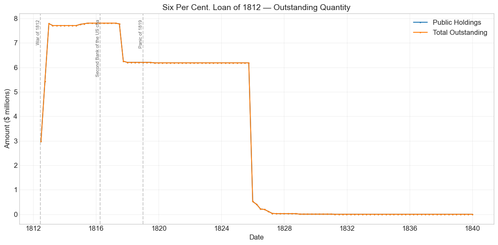
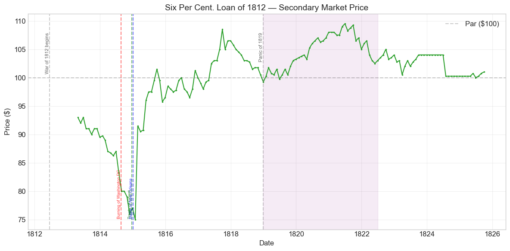
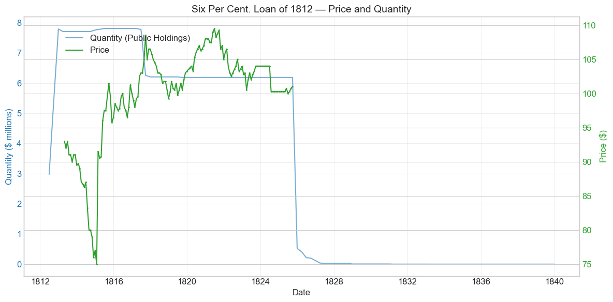
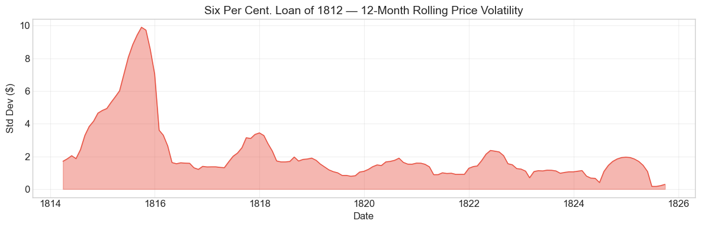

Bond Biography: Six Per Cent. Loan of 1812#
Generated from the Hall-Payne-Sargent US Federal Bond Database (2,857 issues, 1776-1960)
Bond ID (L1): 20048
Category: Interest Bearing > Marketable > Long Term Bond
import pandas as pd
import numpy as np
import matplotlib.pyplot as plt
import matplotlib.patches as mpatches
import datetime
import warnings
warnings.filterwarnings('ignore')
plt.style.use('seaborn-v0_8-whitegrid')
plt.rcParams.update({'figure.figsize': (12, 6), 'font.size': 12,
'axes.titlesize': 14, 'axes.labelsize': 12})
# Load the bond database
store = pd.HDFStore('../data/BondDF.h5', mode='r')
BondList = store['BondList']
BondQuant = store['BondQuant']
BondPrice = store['BondPrice']
store.close()
BondQuant_T = BondQuant.transpose()
BondPrice_T = BondPrice.transpose()
bond_id = 20048
print(f'Loaded data for: Six Per Cent. Loan of 1812 (ID: 20048)')
/Users/thomassargent/anaconda3/lib/python3.9/site-packages/pandas/core/arrays/masked.py:60: UserWarning: Pandas requires version '1.3.6' or newer of 'bottleneck' (version '1.3.5' currently installed).
from pandas.core import (
Loaded data for: Six Per Cent. Loan of 1812 (ID: 20048)
Overview#
The Six Per Cent. Loan of 1812 was authorized under the Act of March 14, 1812. It was first issued on June 30, 1812 with a coupon rate of 6.0%. The bond was active during the War of 1812 and the Panic of 1819. During its lifetime on the secondary market, the bond’s average price was \(99.96, ranging from \)75.0 to \(109.5 (based on 150 monthly observations from 1813-04-30 to 1825-09-30). Peak outstanding reached \)7.81 million on 1815-06-30.
In the decade leading up to the War of 1812, Jeffersonian finance dictated national economic and financial policy. President Thomas Jefferson advocated for a decentralized federal government and an agrarian society. Land sales and customs duties generated most of the government’s revenue, and the government did not impose an income tax on its citizens. The Embargo Act of 1807 severely damaged customs revenues, and in 1811, Congress refused to recharter the First Bank of the United States despite Treasury Secretary Albert Gallatin’s efforts to renew it. The loss of a national bank proved consequential: the government forfeited a critical source of loans just as the nation headed toward war. As Perkins (1994) notes, the United States faced its bleakest credit outlook since the Revolutionary War.
This was the first long-term bond issued to finance the War of 1812, intended to generate sustained revenue for war supplies and military expenditures. Congress allowed the President to borrow no more than \(11 million, yet bonds could not be sold below par. The modest 6% interest rate -- typical for the era, as most government bonds since 1801 carried rates between 5% and 6% -- did not excite many potential buyers. The Madison Administration refused to raise rates any higher. Only \)8,134,700 was ultimately raised through the issuance, well below the $11 million authorization, foreshadowing the persistent financing difficulties that would plague the government throughout the war.
Historical Context#
The following major events occurred during this bond’s lifetime:
Date |
Event |
Category |
|---|---|---|
1812-06-18 to 1815-02-18 |
War of 1812 |
War |
1814-08-24 |
British burn Washington, D.C. |
Other |
1814-12-24 |
Treaty of Ghent (War of 1812 ends) |
Other |
1816-04-10 |
Second Bank of the US chartered |
Legislation |
1819-01-01 to 1821-12-31 |
Panic of 1819 |
Crisis |
The bond’s lifetime overlapped with: War of 1812. Financial crises during this period included: Panic of 1819. Key legislation: Second Bank of the US chartered.
War Finance in Crisis#
The War of 1812 created an enormous fiscal gap. By 1814, war expenditures had ballooned to \(45.4 million while Treasury revenue stood at only \)16 million – a deficit of nearly $29.4 million. The Republican Congress, ideologically opposed to direct taxation, relied overwhelmingly on borrowing to finance the conflict. Long-term bonds like this Six Per Cent. Loan were the first instruments deployed, but they struggled to sell due to America’s underdeveloped securities market and widespread doubt that the Treasury could honor its long-term commitments. These difficulties were compounded by the closure of the First Bank of the United States in 1811, which eliminated a key institutional lender to the federal government. New England, broadly opposed to the war, remained an unwilling market for government debt. Southern capital markets south of Baltimore lacked the organizational infrastructure to facilitate large bond sales.
Impact of War Events on Bond Prices#
The British Chesapeake Campaign of 1814 – culminating in the burning of Washington, D.C. on August 24, 1814 – had a devastating effect on bondholder confidence. From the end of June 1814 to the end of January 1815, the bond’s price decreased by 13.79%, reflecting deep uncertainty about the war’s outcome and the government’s solvency. The signing of the Treaty of Ghent on December 24, 1814 (news of which reached American markets in early 1815) and the Battle of New Orleans on January 8, 1815 triggered a sharp recovery, with a +22% price spike detected in February 1815 as confidence surged.
The Panic of 1819#
The period from 1819 through the latter half of 1822 actually saw an increase in the bond’s price, which may seem paradoxical during a financial crisis. The rise is explained by the Second Bank of the United States’ tighter monetary policy during this period, which contracted the money supply and produced deflation. As the general price level fell, the fixed nominal payments of the 6% bonds became more valuable in real terms, driving bond prices upward. The market price reached a maximum of $109.50 by the end of June 1822.
# Bond Lifecycle Timeline
fig, ax = plt.subplots(figsize=(14, 4))
# Key dates
dates = [('Authorization', '1812-03-14'), ('First Issue', '1812-06-30')]
events = [('War of 1812', '1812-06-18', 'war'), ('British burn Washington, D.C.', '1814-08-24', 'other'), ('Treaty of Ghent (War of 1812 ends)', '1814-12-24', 'other'), ('Second Bank of the US chartered', '1816-04-10', 'legislation'), ('Panic of 1819', '1819-01-01', 'crisis')]
import matplotlib.dates as mdates
from datetime import datetime
# Plot bond lifetime bar
d0 = datetime.strptime(dates[0][1], '%Y-%m-%d')
d1 = datetime.strptime(dates[-1][1], '%Y-%m-%d')
ax.barh(0, (d1 - d0).days, left=mdates.date2num(d0), height=0.3,
color='#1f77b4', alpha=0.4, label='Bond Lifetime')
# Mark key dates
for label, date_str in dates:
d = datetime.strptime(date_str, '%Y-%m-%d')
ax.plot(mdates.date2num(d), 0, 'D', color='#1f77b4', markersize=10)
ax.annotate(f'{label}\n{date_str}', (mdates.date2num(d), 0.25),
ha='center', va='bottom', fontsize=8, rotation=30)
# Mark historical events
colors = {'war': '#e74c3c', 'crisis': '#9b59b6', 'legislation': '#2ecc71', 'other': '#95a5a6', 'monetary': '#f39c12'}
for name, date_str, cat in events:
d = datetime.strptime(date_str, '%Y-%m-%d')
ax.axvline(mdates.date2num(d), color=colors.get(cat, 'gray'), alpha=0.5, linestyle='--')
ax.annotate(name, (mdates.date2num(d), -0.25), ha='center', va='top',
fontsize=10, rotation=45, color=colors.get(cat, 'gray'))
ax.set_yticks([])
ax.xaxis.set_major_formatter(mdates.DateFormatter('%Y'))
ax.set_title('Six Per Cent. Loan of 1812 — Lifecycle Timeline')
ax.set_ylim(-1, 1)
plt.tight_layout()
plt.show()

Bond Features#
Feature |
Detail |
|---|---|
Name |
Six Per Cent. Loan of 1812 |
Authorizing Act |
March 14, 1812 |
Authorization Date |
March 14, 1812 |
First Issue Date |
June 30, 1812 |
Term |
12 years |
First Redemption |
N/A |
Final Redemption |
N/A |
Coupon Rate |
6.0% |
Payment Frequency |
4.0 times/year |
Callable |
No |
Payable in Coin |
Yes |
Authorized Amount |
N/A |
Price Sold |
1.0 |
# Display full bond features from database
row = BondList.loc[20048]
display_cols = [
"Treasury's Name Of Issue", 'Authorizing Act', 'Term Of Loan',
'First Issue Date', 'First Redemption Date', 'Final Redemption Date',
'Coupon Rate', 'Coupons Per Year', 'Callable', 'Coin',
'Authorized Amount', 'Price Sold'
]
print('Bond Features from Database:')
print('=' * 55)
for col in display_cols:
if col in row.index:
print(f' {col:<30} {row[col]}')
Bond Features from Database:
=======================================================
Treasury's Name Of Issue Six Per Cent. Loan of 1812
Authorizing Act March 14, 1812
Term Of Loan 12 years
First Issue Date 1812-06-30 00:00:00
First Redemption Date NaT
Final Redemption Date NaT
Coupon Rate 6.0
Coupons Per Year 4.0
Callable 0.0
Coin 1.0
Authorized Amount nan
Price Sold 1.0
Bond Quantity Over Time#
The bond’s outstanding quantity peaked at $7.81 million on 1815-06-30. Data spans from 1812-06-30 to 1832-12-31 (83 monthly observations).
# Bond quantity over time
fig, ax = plt.subplots(figsize=(12, 6))
for stype in ['Public Holdings', 'Total Outstanding']:
try:
s = BondQuant_T.loc[(20048, stype)]
s = s[s.notna()]
if len(s) > 0:
ax.plot(s.index, s.values / 1e6, marker='.', markersize=3, linewidth=1.5, label=stype)
except KeyError:
pass
ax.set_title('Six Per Cent. Loan of 1812 — Outstanding Quantity')
ax.set_xlabel('Date')
ax.set_ylabel('Amount ($ millions)')
ax.legend()
ax.grid(True, alpha=0.3)
events = {'1812-06-18': 'War of 1812', '1816-04-10': 'Second Bank of the US cha', '1819-01-01': 'Panic of 1819'}
for date_str, label in events.items():
d = pd.Timestamp(date_str)
ax.axvline(d, color='gray', alpha=0.4, linestyle='--')
ax.text(d, ax.get_ylim()[1]*0.97, label, rotation=90, va='top', ha='right', fontsize=8, alpha=0.7)
plt.tight_layout()
plt.show()

Quantity Analysis#
The Six Per Cent. Loan of 1812 reached a total outstanding of approximately \(3 million by the end of June 1813. By the end of 1813, total outstanding had increased to \)7.7 million, reflecting the government’s accelerating need for war funds. There was a slight uptick at the end of 1814, coinciding with the war’s conclusion. The maximum quantity outstanding was \(7,810,500 -- well below the \)11 million Congress had authorized, underscoring the difficulty the Treasury faced in finding willing buyers.
Sinking Fund Purchases (1817): Quantity dropped from \(7.78 million to \)6.26 million between July and September 1817, a 19.57% decrease (-\(1,522,048). According to Bayley (1881), the commissioners of the sinking fund purchased \)1,603,997 of this stock at par during this period. This pattern of sinking fund intervention was common across all the War of 1812 long-term bonds: the commissioners simultaneously purchased large blocks of the Sixteen Million Loan (\(2,580,943.70) and the Seven and One-Half Million Loan (\)1,662,349.56) at par during the same months in 1817.
Redemption and Exchange (1824-1827): There was a 91.57% decrease in total outstanding from October to December 1825, most likely caused by bonds becoming redeemable starting January 1, 1825. The series of quantity decreases detected in late 1825 through mid-1827 (-91.6%, -21.8%, -46.8%, -41.4%, -69.0%, -22.6%) reflect the systematic retirement of this debt. Acts of Congress in 1822, 1824, and 1825 authorized the exchange of redeemed amounts for new interest-bearing stocks at lower rates. In particular, Congress offered new 4.5% stock (payable in 1829-1830) to replace the maturing 6% obligations, seeking to reduce the government’s interest burden. However, the 4.5% conversion was largely unsuccessful – only about one-tenth of the expected amount was exchanged, as bondholders preferred cash redemption to accepting a lower coupon rate.
Secondary Market Prices#
Overall Statistics (1813-04-30 to 1825-09-30): Mean \(99.96, Range \)75.0–\(109.5, Std Dev \)6.96, 150 observations.
By Period:
Period |
Mean |
Std |
Min |
Max |
Obs |
|---|---|---|---|---|---|
Issue to End (1812-06 to 1825-09) |
$99.96 |
$6.96 |
$75.0 |
$109.5 |
150 |
# Annotated price chart with historical military events
fig, ax = plt.subplots(figsize=(12, 6))
s = BondPrice_T.loc[(20048, 'Average')]
s = pd.to_numeric(s, errors='coerce').dropna()
if len(s) > 0:
ax.plot(s.index, s.values, marker='.', markersize=3, linewidth=1.5, color='#2ca02c')
ax.axhline(100, color='black', alpha=0.2, linestyle='--', label='Par ($100)')
ax.set_title('Six Per Cent. Loan of 1812 — Secondary Market Price')
ax.set_xlabel('Date')
ax.set_ylabel('Price ($)')
ax.legend()
ax.grid(True, alpha=0.3)
# Historical event annotations
events = {'1812-06-18': 'War of 1812 begins', '1819-01-01': 'Panic of 1819'}
for date_str, label in events.items():
d = pd.Timestamp(date_str)
ax.axvline(d, color='gray', alpha=0.4, linestyle='--')
ax.text(d, ax.get_ylim()[1]*0.97, label, rotation=90, va='top', ha='right', fontsize=8, alpha=0.7)
# Military events with specific annotations
military_events = {
'1814-08-24': ('Burning of Washington DC', 'red'),
'1815-01-08': ('Battle of New Orleans', 'blue'),
'1814-12-24': ('Treaty of Ghent', 'green'),
}
for date_str, (label, color) in military_events.items():
d = pd.Timestamp(date_str)
ax.axvline(d, color=color, alpha=0.5, linestyle='--')
ax.text(d, ax.get_ylim()[0] + (ax.get_ylim()[1]-ax.get_ylim()[0])*0.05, label,
rotation=90, va='bottom', ha='right', fontsize=7, color=color, alpha=0.8)
# Shade Panic of 1819 period
ax.axvspan(pd.Timestamp('1819-01-01'), pd.Timestamp('1822-06-30'), alpha=0.08, color='purple', label='Panic of 1819')
plt.tight_layout()
plt.show()

# Price and Quantity — dual-axis chart
fig, ax1 = plt.subplots(figsize=(12, 6))
# Quantity (left axis)
for stype in ['Public Holdings', 'Total Outstanding']:
try:
q = BondQuant_T.loc[(20048, stype)]
q = q[q.notna()]
if len(q) > 0:
ax1.plot(q.index, q.values / 1e6, color='#1f77b4', alpha=0.6, label=f'Quantity ({stype})')
break
except KeyError:
pass
ax1.set_xlabel('Date')
ax1.set_ylabel('Quantity ($ millions)', color='#1f77b4')
ax1.tick_params(axis='y', labelcolor='#1f77b4')
# Price (right axis)
ax2 = ax1.twinx()
p = BondPrice_T.loc[(20048, 'Average')]
p = pd.to_numeric(p, errors='coerce').dropna()
if len(p) > 0:
ax2.plot(p.index, p.values, color='#2ca02c', marker='.', markersize=2, label='Price')
ax2.set_ylabel('Price ($)', color='#2ca02c')
ax2.tick_params(axis='y', labelcolor='#2ca02c')
ax1.set_title('Six Per Cent. Loan of 1812 — Price and Quantity')
ax1.grid(True, alpha=0.3)
fig.legend(loc='upper left', bbox_to_anchor=(0.1, 0.9))
plt.tight_layout()
plt.show()

Price Analysis#
Prices dipped substantially during the latter half of 1814. From the end of June 1814 to the end of January 1815, prices decreased by 13.79%. This decline coincides directly with the British Chesapeake Campaign, which saw the burning of Washington, D.C. on August 24, 1814. Beyond the military shock, the broader decrease in trade during the war further depressed bond values.
The uptick in prices after January 1815 is explained by two events in quick succession: the signing of the Treaty of Ghent on December 24, 1814 (ending the war) and the Battle of New Orleans on January 8, 1815 (a decisive American military victory, though it occurred after the peace treaty was signed). News of both events reached financial markets in early 1815, producing the +22% price spike detected in February 1815.
The market price reached its maximum of $109.50 by the end of June 1822. Notably, the period from 1819 through mid-1822 saw rising prices despite the Panic of 1819 – this apparent paradox is explained by the Second Bank of the United States’ contractionary monetary policy. The resulting deflation increased the real value of the bond’s fixed nominal coupon payments, driving prices above par.
In 1817, the commissioners of the sinking fund purchased stock at par, providing price support. By the time bonds became redeemable in January 1825, the outstanding quantity dropped sharply as the government retired the debt.
Detected Price/Quantity Events#
The following significant movements were auto-detected:
Date |
Type |
Change |
Nearest Historical Event |
|---|---|---|---|
1812-09 |
quantity_increase |
+82.5% |
War of 1812 |
1812-12 |
quantity_increase |
+43.4% |
None identified |
1815-02 |
price_spike |
+22.0% |
War of 1812 |
1815-05 |
price_spike |
+5.8% |
War of 1812 |
1825-12 |
quantity_decrease |
-91.6% |
None identified |
1826-03 |
quantity_decrease |
-21.8% |
None identified |
1826-06 |
quantity_decrease |
-46.8% |
None identified |
1826-12 |
quantity_decrease |
-41.4% |
None identified |
1827-03 |
quantity_decrease |
-69.0% |
None identified |
1827-06 |
quantity_decrease |
-22.6% |
None identified |
Causal Explanations#
Quantity increases (1812): The +82.5% and +43.4% quantity jumps in September and December 1812 reflect the initial issuance waves as the Treasury worked to place the \(11 million authorization. Despite active marketing, total subscriptions fell well short of the authorized amount -- only \)6.2 million was initially placed, of which \(4.2 million was purchased by banks for their long-term portfolios and \)2.0 million by individuals (Perkins, 1994).
Price spike, February 1815 (+22.0%): This dramatic recovery directly follows the arrival of news about the Treaty of Ghent (signed December 24, 1814) and the Battle of New Orleans (January 8, 1815). The end of hostilities restored confidence in the government’s ability to service its debt, and the resumption of trade promised higher customs revenues.
Price spike, May 1815 (+5.8%): A continuation of the post-war recovery as markets fully absorbed the implications of peace. Trade resumed, customs revenues improved, and the threat of default receded.
Quantity decreases (1825-1827): The cascade of sharp quantity declines beginning in late 1825 reflects the systematic redemption of the bond after its January 1, 1825 call date. The 91.6% drop in December 1825 represents the bulk redemption. Subsequent decreases through 1827 reflect the retirement of remaining holdings, including conversions into new 4.5% stock authorized by acts of Congress in 1822, 1824, and 1825. The government sought to reduce its interest expense by offering lower-coupon replacement bonds, though this exchange program was largely unsuccessful.
Price Volatility#
Maximum drawdown: -19.4% (from peak on 1813-04-30 to trough on 1815-01-31)
Average monthly return: 0.079%
The chart below shows the 12-month rolling standard deviation of prices, indicating periods of high and low price stability.
# Rolling volatility (12-month window)
p = BondPrice_T.loc[(20048, 'Average')]
p = pd.to_numeric(p, errors='coerce').dropna()
if len(p) >= 12:
rolling_std = p.rolling(window=12).std().dropna()
fig, ax = plt.subplots(figsize=(12, 4))
ax.fill_between(rolling_std.index, rolling_std.values, alpha=0.4, color='#e74c3c')
ax.plot(rolling_std.index, rolling_std.values, color='#e74c3c', linewidth=1)
ax.set_title('Six Per Cent. Loan of 1812 — 12-Month Rolling Price Volatility')
ax.set_xlabel('Date')
ax.set_ylabel('Std Dev ($)')
ax.grid(True, alpha=0.3)
plt.tight_layout()
plt.show()
else:
print('Insufficient data for rolling volatility (need >= 12 observations)')

Issuance, Distribution, and Redemption#
The bond was originally sold at par (\(100 per \)100 face value) – Congress explicitly prohibited sales below par for this issue, unlike later War of 1812 loans which were sold at deep discounts.
Marketing Challenges#
The Treasury’s approach to marketing was rudimentary by modern standards. American securities markets were primarily regional, concentrated in major cities such as New York and Philadelphia. American firms lacked the capacity to underwrite large securities issues, and American agents in Europe could not effectively market American government debt. As a result, the Treasury simply announced the Six Per Cent. bonds and waited for investors to come forward. Only $6.2 million was initially placed (Perkins, 1994, pp. 327-330).
Who Bought the Bonds#
Banks ($4.2 million): Commercial banks purchased the majority of the bonds for their long-term investment portfolios.
Individuals ($2.0 million): Private investors purchased the remainder, though many potential buyers were deterred by the modest 6% interest rate and fears that the United States might lose the war against Britain, which commanded the world’s largest army and navy.
New England resistance: New Englanders, broadly opposed to the war, remained unsympathetic to government borrowing and largely refused to participate.
Congress’s failure to articulate a clear plan for servicing interest payments further eroded confidence. The Temporary Loan of 1812, authorized by the same act, raised an additional $2,150,000 through special contracts with various banks (Bayley, 1881).
Redemption and Retirement#
Bonds became redeemable starting January 1, 1825. In the interim:
1817: The commissioners of the sinking fund purchased $1,603,997 at par, reducing total outstanding by nearly 20% in a single quarter.
1822-1825: Acts of Congress authorized the exchange of maturing 6% stock for new 4.5% stock payable in 1829-1830, part of a broader post-war debt consolidation effort. However, the conversion was largely unsuccessful.
1825-1827: The bulk of the remaining stock was redeemed, with total outstanding falling by over 91% in the final quarter of 1825 alone.
Implications and Legacy#
Fiscal Policy Precedents#
The Six Per Cent. Loan of 1812 exposed fundamental weaknesses in the young republic’s fiscal infrastructure. The government’s inability to raise even $11 million – a modest sum relative to eventual war expenditures – demonstrated that Jeffersonian fiscal orthodoxy (minimal taxation, no national bank, reliance on customs duties) was incompatible with wartime finance. The experience directly contributed to several consequential policy shifts:
The chartering of the Second Bank of the United States (1816): The chaos of wartime finance – with hundreds of state banks issuing depreciated notes, no central institution to manage government debt, and the suspension of specie payments – made the case for a national bank irresistible even to many Republicans who had opposed the First Bank.
The evolution of government bond marketing: The failure of the passive “announce and wait” approach for this loan led Treasury officials to embrace more active distribution methods for subsequent issues. By the time of the Sixteen Million Loan of 1813, the government was working with private syndicates (Girard, Parish, and Astor) – an early prototype of the investment banking relationship that would become standard in government finance.
The precedent of discount sales: While this initial loan was constrained to sales at par, the government quickly abandoned that restriction. The Sixteen Million Loan sold at 88%, the Seven and One-Half Million Loan at 88.25%, and the Six Percent Loans of 1814 at just 80% of face value – a progressive deterioration that reflected both the government’s desperation and the market’s declining confidence.
Post-War Debt Consolidation#
After the war, the government pursued an aggressive program of debt retirement through the sinking fund. The commissioners purchased large blocks of all outstanding 6% war bonds at par in 1817, providing price support and reducing the debt burden. In the 1820s, Congress attempted to refinance the remaining 6% obligations into 4.5% stock, seeking to reduce interest costs. The conversion was largely unsuccessful – only about one-tenth of the expected amount was exchanged – revealing that bondholders preferred outright redemption to accepting a lower coupon.
The Bond as a Window into Early American Capital Markets#
The story of this bond illuminates the primitive state of American financial markets in the early republic. There was no organized government bond market; securities traded regionally, with limited price discovery. The Treasury lacked professional staff for debt management and relied on ad hoc arrangements with banks and individuals. The experience of the War of 1812 – this loan’s story included – was a crucible that forced the development of more sophisticated financial institutions and practices, laying the groundwork for the much larger federal borrowing that would occur during the Civil War half a century later.
References#
Primary and Archival Sources#
Bayley, R. A. (1881). The National Loans of the United States, From July 4, 1776 to June 30, 1880. Washington: Government Printing Office.
Elliott, J. (1845). The Funding System of the United States and of Great Britain with Some Tabular Facts of Other Nations. Washington: Blair and Rives.
Department of the Treasury. (1817). Report on the Finances, December 1817.
Secondary Sources#
Payne, J., Szoke, A., Hall, G. & Sargent, T. (2025). Quarterly Journal of Economics.
Dewey, D. R. (1918). Financial History of the United States. Longmans, Green and Co.
Perkins, E. J. (1994). American Public Finance and Financial Services, 1700-1815. Ohio State University Press.
Kagin, D. H. (1984). Monetary Aspects of the Treasury Notes of the War of 1812. The Journal of Economic History, 44(1). Cambridge University Press.
Morales, L. R. (2009). The Financial History of the War of 1812. University of North Texas.
Hensen, M. T. Girard to the Rescue: Stephen Girard and the War Loan of February 8, 1813.